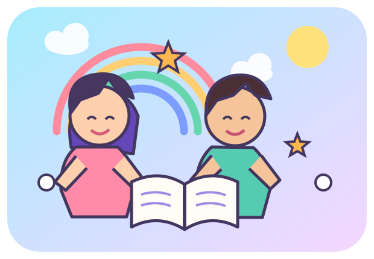

🧸
1AP – 2AP
Les lettres, les nombres, les couleurs et les premières phrases.
Voir les vidéos ↗Des couleurs, des mini-défis, des histoires et des vidéos éducatives. Choisis ton niveau et amuse-toi en apprenant.

Les lettres, les nombres, les couleurs et les premières phrases.
Voir les vidéos ↗Lecture, calcul, français et découverte du monde.
Voir les vidéos ↗Révisions, exercices corrigés et préparation à l’examen de fin de cycle.
Réviser ↗Choisis la bonne réponse et gagne une étoile. Les questions sont des exemples ludiques.
Les liens ouvrent YouTube. Vérifie les vidéos avant de les proposer à un enfant et active le mode restreint si nécessaire.
Chansons et histoires pour apprendre à lire.
Trouver une vidéo ↗Compter, additionner et comprendre les nombres.
Trouver une vidéo ↗Découvrir les animaux, les plantes et le corps humain.
Explorer ↗